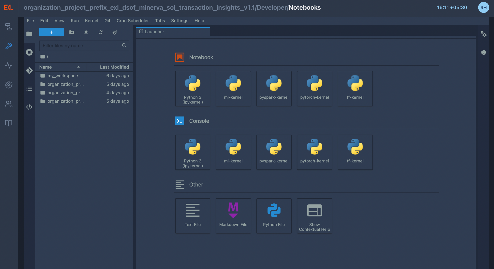
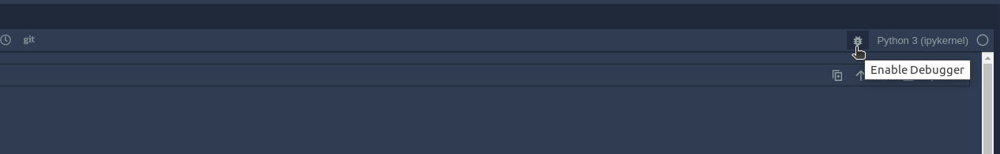
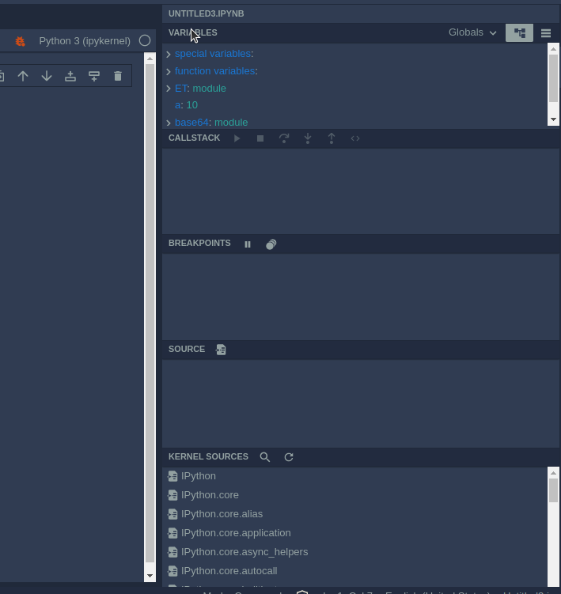
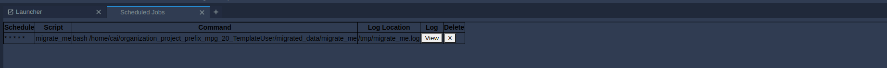

Notebooks#
It provides the best way to serve AI Notebooks to multiple users. It is a multi-user Hub that spawns, manages, and proxies multiple instances of the single-user notebook servers. Any user can drag and drop basic code snippets in Notebooks and edit them based on the requirement of the project. Additionally, models written in Notebooks can be scheduled based on the user’s requirements.
{kind=link}
DSCW Notebooks provides the best way to serve Notebooks to multiple users. It is a multi-user Hub that spawns, manages, and proxies multiple instances of the single-user notebook servers.
Overview#
Launcher
Notebook
Console
Others
FAAS Snippets
Git Integration
Logging and Debugger
Scheduling
Launcher#
The launcher contains three parts :
- Notebook - DSCW offers Notebooks with multiple kernels including
:
- Ipy-kernel - Basic functionality of python notebooks can be found in
this kernel
- ML-kernel - It pre-installed common ML libraries like sci-kit learn,
NumPy, pandas, etc.
- TF-kernel - Tensorflow kernel contains pre-installed
tensorflow-related libraries along
- PyTorch-kernel - PyTorch kernel contains pre-installed
PyTorch-related libraries
Spark - Scala Spark kernel contains pre-installed related libraries
PySpark - PySpark kernel contains pre-installed related libraries
SparkR - R kernel contains pre-installed related libraries
{kind=link}
- Console: DSCW provides consoles of kernels which help users
execute their commands and scripts line by line.
{kind=link}
- Others: Text file, Markdown file, Python file, and Contextual
help (documentation of a given function on-click) are other functionalities that DSCW provides.
{kind=link}
Reusable Snippets#
- DSCW Notebooks brings forth the idea of introducing code snippets
that can be inserted into a notebook by drag and drop or on right click and insert.
- The user can introduce their code snippets, edit existing snippets,
copy, download or insert them into their notebook.
The user can also Search snippets and Filter snippets by tags.
- There are already existing multiple code snippets that users can
browse through in the notebooks, from basic i/o code snippets to deep learning code snippets.
{kind=link}
Git Integration#
A basic version control system with git integration is provided allowing users to keep their projects updated with the team.
- Interactive UI provided for git repository management instead of
users updating their codes via command line.
{kind=link}
- Easier and Faster project management allowing users to compare their
code versions in the Notebook itself.
{kind=link}
- Basic functionalities like push, pull, commit, making new branches,
etc. have been provided in the Notebook UI.
{kind=link}
Logging and Debugger#
Users can see the logs by browsing in the Notebooks menu bar (Views -> Show Log Console) which will open the log console where users will be able to view the logs.
{kind=link}
{kind=link}
The debugger can be used by clicking the “Enable Debugger” icon present on the top right corner of the Notebooks besides the kernel name.
 {kind=link}
{kind=link}
Debugger has multiple options as can be seen in the figure above. The current set of all the variables defined in that notebook can be seen in the “Variables” section. “Breakpoints” can be used to help the user control the flow of the program. In “Callstack”, any user can see the current execution flow of the application at any particular breakpoint. In “Kernel Sources”, users can browse all the installed libraries for the notebook.
Scheduling#
Users can schedule when they want to run the model based on their requirements by right-clicking on the notebook in the file explorer. Notebook uses a cron scheduler to schedule the tasks and all the tasks can be viewed in ‘Show cronjobs’. In case the pod is not running at the scheduled time of the task, the pod is automatically started to run the task.
{kind=link}